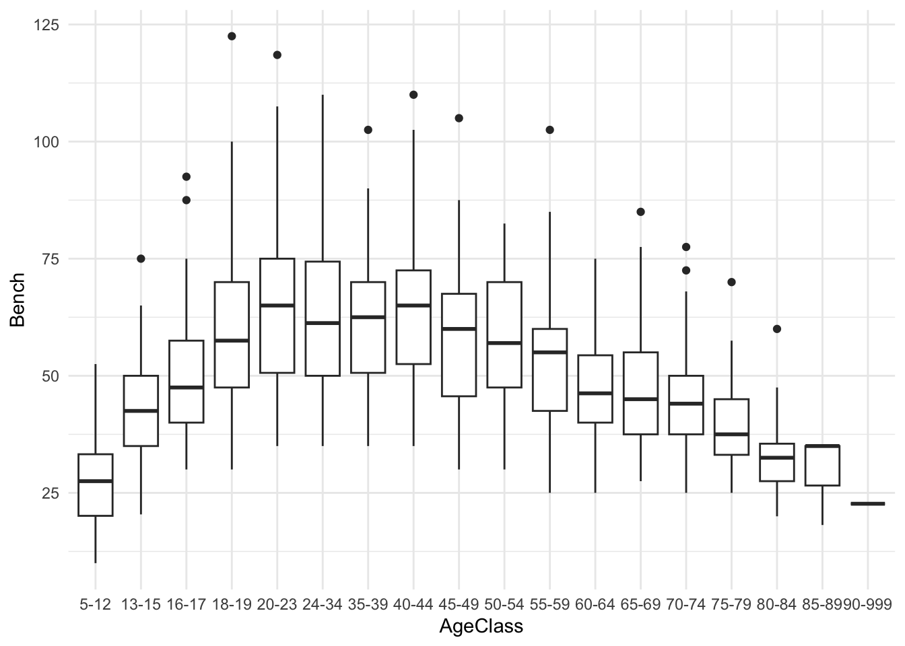
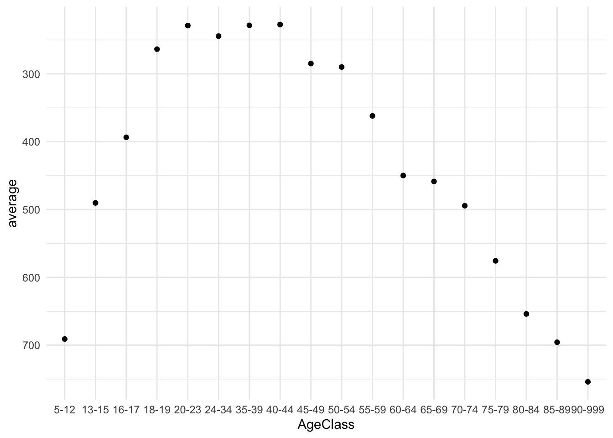
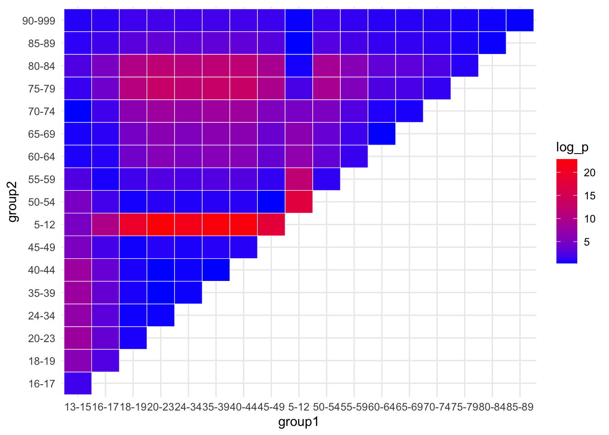
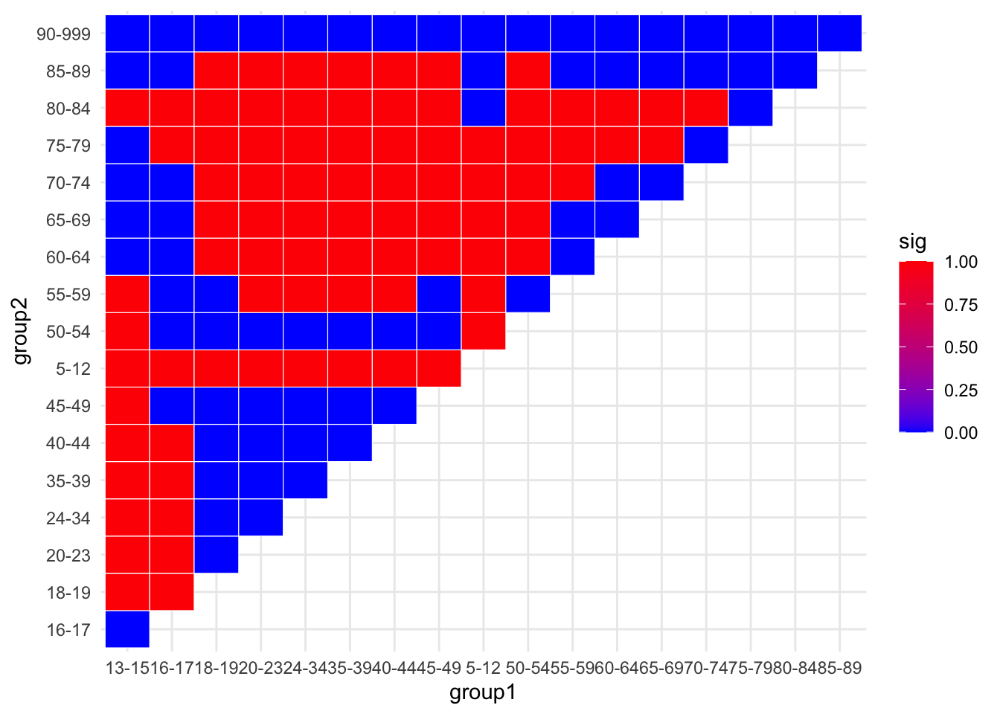

library(tidyverse)
library(readr)
library(ggplot2)
openpl_male <- read_csv("~/Desktop/SYE/github repos/stat450-spr2026-score/keelinjoyce/powerlifting/openpl_sample_male.csv")
openpl_female <- read_csv("~/Desktop/SYE/github repos/stat450-spr2026-score/keelinjoyce/powerlifting//openpl_sample_female.csv")Female Powerlifting: Performing Kruskal-Wallis and Dunn’s Test Analyses Across Age Groups
non-parametric analysis
Kruskal-Wallis Test
post-hoc Dunn’s Test
This module explores results from powerlifting competitions, comparing the ranks between age groups.

Welcome Video
For those interested in how some events in powerlifting competitions look, please check out this video from Day 1 of Powerlifting America Open Nationals from @A7Intl.
Introduction
In powerlifting competitions, athletes compete in three compound events to lift as much weight as possible. Bench press is done with athletes laying flat on their back and lowering the bar to their chest and lifting back up, targeting upper body (specifically chest, triceps, and shoulders). Deadlifts are a full body lift in which athletes lift a bar from the ground to hip level (targets glutes, hamstrings, and back). Squats are done with a barbell on their back, just below the shoulders, and hinging until the hips are lower than the top of the knee (targeting quads, glutes, hamstrings, and core).
This module analyzes results from powerlifting competitions. Results are found at OpenPowerlifting, a project aimed at collecting powerlifting data over time. Performances are ranked by how much weight is lifted and athletes are sorted into age classes. You will compare the rankings achieved by athletes across age classes and distinguish any differences between classes.
Data
The initial dataset from OpenPowerlifting Dataset contains 3,863,253 rows and 42 columns but has been condensed to a female dataset (6, 661 observations and 14 variables) and male dataset (7,350 observations and 14 variables) from SCORE Sports Data Repository. Each row represents a powerlifting athlete and variables including their demographics and how much weight they lifted (in kilograms).
Download wrangled and cleaned data:
Male athletes: openpl_male.csv Female athletes: openpl_female.csv
Descriptions of Relevant Variables
| Variable | Description |
|---|---|
| Name | Name of the athlete |
| Age | Age of the athlete on the start date |
| AgeClass | Age class the athlete falls in (e.g. 40-45) |
| BodyweightKg | Recorded bodyweight of athlete in kilograms at the start of the event |
| Squat | Weight in kilograms of the athlete’s best attempt at squatting |
| Bench | Weight in kilograms of the athlete’s best attempt at benching |
| Deadlift | Weight in kilograms of the athlete’s best attempt at deadlifting |
| TotalKg | Sum of weight lifted between the three exercises |
| Place | The recorded place of the athlete at the end of the meet |
| Date | Date the competition was held |
Data Source
Adapted from
and
Performing the Tests
Kruskal-Wallis Test of Differences
The Kruskal-Wallis test is a non-parametric test to determine if there are significant difference between independent groups. It is typically used as an alternative to ANOVA testing on non-normal data and compares the medians of the data as opposed to the means.
Used when
population medians (null hypothesis is population medians are equal)
the data is continuous or ordinal
the assumptions (mainly normality) are violated for a one-way ANOVA
observations are independent
sample size is at least 5
How to run test
form hypothesis
rank data from smallest to largest from all groups
find the sum of the ranks for each group
use test in R to calculate the Kruskal-Wallis H statistic
if p-value is less than 0.05, reject the null indicating as least one group differs slightly
if null is rejected, use Dunn’s test (pairwise comparison test) to find which groups specifically differ
Forming a Hypothesis
For a Kruskal-Wallis test, the null hypothesis is always that there is no difference in medians between groups and the alternative hypothesis claims that there is a difference between at least two groups.
\(H_0:\) there is no difference in medians between groups
\(H_a:\) at least one group differs from another
To run the Kruskal-Wallis test, the data gets ranked from 1-n before being grouped by level, in this case AgeClass.
female_bench_ranked <- openpl_female |> arrange(desc(Bench)) |>
mutate(rank = row_number()) |>
filter(!is.na(AgeClass)) |>
mutate(AgeClass = fct_relevel(AgeClass, "5-12")) |>
select(Name, Age, AgeClass, Bench, rank)
female_bench_ranked |>
group_by(AgeClass) |>
summarise(n())Create a boxplot to look at the distribution of bench weight across age classes
Click to reveal code
ggplot(data = female_bench_ranked, aes(x = AgeClass, y = Bench)) +
geom_boxplot() +
theme_minimal()
The boxplot shows the general trend of the data increases to a peak between 20-34 and steadily decreases after that.
A scatterplot of the average bench between age groups shows a similar peak in performance.
female_bench_plot <- female_bench_ranked |>
group_by(AgeClass) |>
summarise(total = sum(rank), average = total/n())
ggplot(data = female_bench_plot, aes(x = AgeClass, y = average)) +
geom_point() +
scale_y_reverse() +
theme_minimal()
Run the test using the kruskal.test() function:
female_bench_results <- kruskal.test(female_bench_ranked$rank ~
female_bench_ranked$AgeClass)
female_bench_results
Kruskal-Wallis rank sum test
data: female_bench_ranked$rank by female_bench_ranked$AgeClass
Kruskal-Wallis chi-squared = 328.47, df = 17, p-value < 2.2e-16Using an alpha value of 0.5, our results are significant and we can claim that there is a significant difference between at least two groups.
Dunn’s Test of Pairwise Comparisons
The Dunn’s Test is a pairwise comparison test (similar to a Tukey Test) that determines which groups are significantly different from each other once we have determined there are differences.
Load in the necessary packages for the test:
library(dunn.test)
library(FSA)
library(reshape2)Use the dun.test() function to compile p-values of the differences between groups and form a table of the values:
female_bench_dunn <- dunn.test(female_bench_ranked$rank, female_bench_ranked$AgeClass, method = "bh") Kruskal-Wallis rank sum test
data: x and group
Kruskal-Wallis chi-squared = 328.4698, df = 17, p-value = 0
Dunn's Pairwise Comparison of x by group
(Benjamini-Hochberg)
Col Mean-│
Row Mean │ 13-15 16-17 18-19 20-23 24-34 35-39
─────────┼──────────────────────────────────────────────────────────────────
16-17 │ 2.158866
│ 0.0243*
│
18-19 │ 5.062369 2.903502
│ 0.0000* 0.0037*
│
20-23 │ 5.838721 3.679854 0.776352
│ 0.0000* 0.0003* 0.2517
│
24-34 │ 5.490747 3.331881 0.428378 -0.347973
│ 0.0000* 0.0010* 0.3652 0.3894
│
35-39 │ 5.844528 3.685661 0.782159 0.005807 0.353780
│ 0.0000* 0.0003* 0.2516 0.4977 0.3898
│
40-44 │ 5.872669 3.713803 0.810300 0.033948 0.381922 0.028141
│ 0.0000* 0.0003* 0.2477 0.4929 0.3812 0.4920
│
45-49 │ 4.587981 2.429115 -0.474387 -1.250739 -0.902766 -1.256546
│ 0.0000* 0.0135* 0.3521 0.1334 0.2226 0.1332
│
5-12 │ -4.481221 -6.640087 -9.543590 -10.31994 -9.971969 -10.32574
│ 0.0000* 0.0000* 0.0000* 0.0000* 0.0000* 0.0000*
│
50-54 │ 4.474074 2.315208 -0.588294 -1.364646 -1.016672 -1.370453
│ 0.0000* 0.0175* 0.3107 0.1157 0.1908 0.1155
│
55-59 │ 2.865534 0.706667 -2.196834 -2.973186 -2.625213 -2.978994
│ 0.0041* 0.2739 0.0228* 0.0030* 0.0081* 0.0030*
│
60-64 │ 0.900979 -1.257886 -4.161389 -4.937741 -4.589768 -4.943548
│ 0.2197 0.1340 0.0000* 0.0000* 0.0000* 0.0000*
│
65-69 │ 0.706667 -1.452198 -4.355701 -5.132053 -4.784079 -5.137860
│ 0.2719 0.1009 0.0000* 0.0000* 0.0000* 0.0000*
│
70-74 │ -0.092465 -2.251331 -5.154834 -5.931186 -5.583212 -5.936993
│ 0.4756 0.0200* 0.0000* 0.0000* 0.0000* 0.0000*
│
75-79 │ -1.907378 -4.066244 -6.969747 -7.746099 -7.398125 -7.751906
│ 0.0428 0.0001* 0.0000* 0.0000* 0.0000* 0.0000*
│
80-84 │ -2.810626 -4.471059 -6.704208 -7.301318 -7.033683 -7.305784
│ 0.0048* 0.0000* 0.0000* 0.0000* 0.0000* 0.0000*
│
85-89 │ -1.543737 -2.270116 -3.247038 -3.508252 -3.391172 -3.510206
│ 0.0861 0.0195* 0.0013* 0.0005* 0.0008* 0.0005*
│
90-999 │ -1.166588 -1.594107 -2.169087 -2.322827 -2.253918 -2.323977
│ 0.1526 0.0786 0.0242* 0.0174* 0.0201* 0.0175*
Col Mean-│
Row Mean │ 40-44 45-49 5-12 50-54 55-59 60-64
─────────┼──────────────────────────────────────────────────────────────────
45-49 │ -1.284688
│ 0.1289
│
5-12 │ -10.35389 -9.069203
│ 0.0000* 0.0000*
│
50-54 │ -1.398595 -0.113906 8.955296
│ 0.1106 0.4700 0.0000*
│
55-59 │ -3.007135 -1.722447 7.346755 -1.608540
│ 0.0028* 0.0613 0.0000* 0.0770
│
60-64 │ -4.971690 -3.687002 5.382201 -3.573095 -1.964554
│ 0.0000* 0.0003* 0.0000* 0.0004* 0.0378
│
65-69 │ -5.166001 -3.881313 5.187889 -3.767406 -2.158866 -0.194311
│ 0.0000* 0.0001* 0.0000* 0.0002* 0.0246* 0.4402
│
70-74 │ -5.965135 -4.680446 4.388756 -4.566540 -2.957999 -0.993444
│ 0.0000* 0.0000* 0.0000* 0.0000* 0.0031* 0.1961
│
75-79 │ -7.780047 -6.495359 2.573843 -6.381452 -4.772912 -2.808357
│ 0.0000* 0.0000* 0.0092* 0.0000* 0.0000* 0.0048*
│
80-84 │ -7.327428 -6.339346 0.635981 -6.251737 -5.014573 -3.503590
│ 0.0000* 0.0000* 0.2952 0.0000* 0.0000* 0.0005*
│
85-89 │ -3.519675 -3.087424 -0.035970 -3.049099 -2.507884 -1.846883
│ 0.0005* 0.0022* 0.4954 0.0024* 0.0109* 0.0486
│
90-999 │ -2.329550 -2.075144 -0.279174 -2.052587 -1.734048 -1.345009
│ 0.0174* 0.0296 0.4116 0.0310 0.0604 0.1188
Col Mean-│
Row Mean │ 65-69 70-74 75-79 80-84 85-89
─────────┼───────────────────────────────────────────────────────
70-74 │ -0.799133
│ 0.2496
│
75-79 │ -2.614046 -1.814912
│ 0.0082* 0.0516
│
80-84 │ -3.354141 -2.739509 -1.343619
│ 0.0009* 0.0058* 0.1181
│
85-89 │ -1.781505 -1.512626 -0.901974 -0.302585
│ 0.0550 0.0907 0.2211 0.4049
│
90-999 │ -1.306529 -1.148277 -0.788871 -0.437046 -0.225660
│ 0.1251 0.1560 0.2512 0.3644 0.4304
FDR = 0.05
Reject Ho if p ≤ FDR/2 with stopping rule, where p = Pr(Z ≥ |z|)dunn_results_df <- as.data.frame(female_bench_dunn$P.adjusted, female_bench_dunn$comparisons) |>
tibble::rownames_to_column("comparison") |>
separate(comparison, into = c("group1", "group2"), sep = " - ") |>
rename("p_value" = `female_bench_dunn$P.adjusted`)
dunn_results_df group1 group2 p_value
1 13-15 16-17 2.433848e-02
2 13-15 18-19 8.336055e-07
3 16-17 18-19 3.666173e-03
4 13-15 20-23 1.387632e-08
5 16-17 20-23 2.926648e-04
6 18-19 20-23 2.516684e-01
7 13-15 24-34 9.876803e-08
8 16-17 24-34 9.563725e-04
9 18-19 24-34 3.652196e-01
10 20-23 24-34 3.893796e-01
11 13-15 35-39 1.387946e-08
12 16-17 35-39 2.908389e-04
13 18-19 35-39 2.515929e-01
14 20-23 35-39 4.976834e-01
15 24-34 35-39 3.897746e-01
16 13-15 40-44 1.215025e-08
17 16-17 40-44 2.692896e-04
18 18-19 40-44 2.477458e-01
19 20-23 40-44 4.929022e-01
20 24-34 40-44 3.811539e-01
21 35-39 40-44 4.919902e-01
22 13-15 45-49 7.284634e-06
23 16-17 45-49 1.346375e-02
24 18-19 45-49 3.521347e-01
25 20-23 45-49 1.334194e-01
26 24-34 45-49 2.226090e-01
27 35-39 45-49 1.331851e-01
28 40-44 45-49 1.289487e-01
29 13-15 5-12 1.158693e-05
30 16-17 5-12 1.262235e-10
31 18-19 5-12 2.110950e-20
32 20-23 5-12 1.460060e-23
33 24-34 5-12 3.866693e-22
34 35-39 5-12 2.061524e-23
35 40-44 5-12 3.073879e-23
36 45-49 5-12 1.528606e-18
37 13-15 50-54 1.174167e-05
38 16-17 50-54 1.751129e-02
39 18-19 50-54 3.106541e-01
40 20-23 50-54 1.156655e-01
41 24-34 50-54 1.908238e-01
42 35-39 50-54 1.154577e-01
43 40-44 50-54 1.106070e-01
44 45-49 50-54 4.700159e-01
45 5-12 50-54 3.702863e-18
46 13-15 55-59 4.083006e-03
47 16-17 55-59 2.739002e-01
48 18-19 55-59 2.281347e-02
49 20-23 55-59 3.006193e-03
50 24-34 55-59 8.078651e-03
51 35-39 55-59 2.989666e-03
52 40-44 55-59 2.763663e-03
53 45-49 55-59 6.133606e-02
54 5-12 55-59 1.294606e-12
55 50-54 55-59 7.701250e-02
56 13-15 60-64 2.196980e-01
57 16-17 60-64 1.339924e-01
58 18-19 60-64 4.481154e-05
59 20-23 60-64 1.439519e-06
60 24-34 60-64 7.379568e-06
61 35-39 60-64 1.431355e-06
62 40-44 60-64 1.269358e-06
63 45-49 60-64 2.942158e-04
64 5-12 60-64 1.759034e-07
65 50-54 60-64 4.352927e-04
66 55-59 60-64 3.784133e-02
67 13-15 65-69 2.718713e-01
68 16-17 65-69 1.009294e-01
69 18-19 65-69 1.914545e-05
70 20-23 65-69 5.925620e-07
71 24-34 65-69 3.055957e-06
72 35-39 65-69 5.905048e-07
73 40-44 65-69 5.380978e-07
74 45-49 65-69 1.419264e-04
75 5-12 65-69 4.930553e-07
76 50-54 65-69 2.213831e-04
77 55-59 65-69 2.459201e-02
78 60-64 65-69 4.402300e-01
79 13-15 70-74 4.755981e-01
80 16-17 70-74 2.004181e-02
81 18-19 70-74 5.548548e-07
82 20-23 70-74 8.849093e-09
83 24-34 70-74 6.020947e-08
84 35-39 70-74 8.883066e-09
85 40-44 70-74 7.791262e-09
86 45-49 70-74 4.866259e-06
87 5-12 70-74 1.677126e-05
88 50-54 70-74 7.902455e-06
89 55-59 70-74 3.116798e-03
90 60-64 70-74 1.961419e-01
91 65-69 70-74 2.496331e-01
92 13-15 75-79 4.277308e-02
93 16-17 75-79 6.645329e-05
94 18-19 75-79 1.428801e-11
95 20-23 75-79 7.249030e-14
96 24-34 75-79 9.605642e-13
97 35-39 75-79 7.694481e-14
98 40-44 75-79 6.932542e-14
99 45-49 75-79 3.168455e-10
100 5-12 75-79 9.159573e-03
101 50-54 75-79 6.390149e-10
102 55-59 75-79 3.157034e-06
103 60-64 75-79 4.761641e-03
104 65-69 75-79 8.246975e-03
105 70-74 75-79 5.164666e-02
106 13-15 80-84 4.788038e-03
107 16-17 80-84 1.167497e-05
108 18-19 80-84 8.606299e-11
109 20-23 80-84 1.453307e-12
110 24-34 80-84 9.617521e-12
111 35-39 80-84 1.506252e-12
112 40-44 80-84 1.380591e-12
113 45-49 80-84 8.023540e-10
114 5-12 80-84 2.951936e-01
115 50-54 80-84 1.350092e-09
116 55-59 80-84 1.042583e-06
117 60-64 80-84 5.320588e-04
118 65-69 80-84 8.956325e-04
119 70-74 80-84 5.811253e-03
120 75-79 80-84 1.180945e-01
121 13-15 85-89 8.608142e-02
122 16-17 85-89 1.950373e-02
123 18-19 85-89 1.274408e-03
124 20-23 85-89 5.308634e-04
125 24-34 85-89 7.946218e-04
126 35-39 85-89 5.352116e-04
127 40-44 85-89 5.246632e-04
128 45-49 85-89 2.175390e-03
129 5-12 85-89 4.953659e-01
130 50-54 85-89 2.438741e-03
131 55-59 85-89 1.093108e-02
132 60-64 85-89 4.857298e-02
133 65-69 85-89 5.504319e-02
134 70-74 85-89 9.066964e-02
135 75-79 85-89 2.211093e-01
136 80-84 85-89 4.049216e-01
137 13-15 90-999 1.526090e-01
138 16-17 90-999 7.856258e-02
139 18-19 90-999 2.421915e-02
140 20-23 90-999 1.735296e-02
141 24-34 90-999 2.012389e-02
142 35-39 90-999 1.749650e-02
143 40-44 90-999 1.743665e-02
144 45-49 90-999 2.964231e-02
145 5-12 90-999 4.115757e-01
146 50-54 90-999 3.099610e-02
147 55-59 90-999 6.040541e-02
148 60-64 90-999 1.188226e-01
149 65-69 90-999 1.251281e-01
150 70-74 90-999 1.560189e-01
151 75-79 90-999 2.512161e-01
152 80-84 90-999 3.643810e-01
153 85-89 90-999 4.304252e-01Because there are so many groups to compare, it is difficult to look at each p-value individually. Look at the range to see the variation in p-values:
range(dunn_results_df$p_value)[1] 1.460060e-23 4.976834e-01Create a heatmap of the p-values to see where the results are significantly different:
dunn_results_df$log_p <- -log10(dunn_results_df$p_value)
ggplot(dunn_results_df, aes(x = group1, y = group2, fill = log_p)) +
geom_tile(color = "white") +
scale_fill_gradient(low = "blue", high = "red") +
theme_minimal()
The -log p-value heatmap shows us how many zeros are following the decimal point indicating that the blue values are more significantly difference.
Using an alpha value of 0.05, construct another heatmap indicating which values are significant or not.
dunn_results_df$sig <- if_else(dunn_results_df$p_value <= 0.05,1,0)
ggplot(dunn_results_df, aes(x = group1, y = group2, fill = sig)) +
geom_tile(color = "white") +
scale_fill_gradient(low = "blue", high = "red") +
theme_minimal()
The results in blue show there is not a significant difference between the two groups.
Using an alpha value of 0.01:
dunn_results_df$sig <- if_else(dunn_results_df$p_value <= 0.01,1,0)
ggplot(dunn_results_df, aes(x = group1, y = group2, fill = sig)) +
geom_tile(color = "white") +
scale_fill_gradient(low = "blue", high = "red") +
theme_minimal()
By lowering the alpha value, you can see there are fewer significant values.